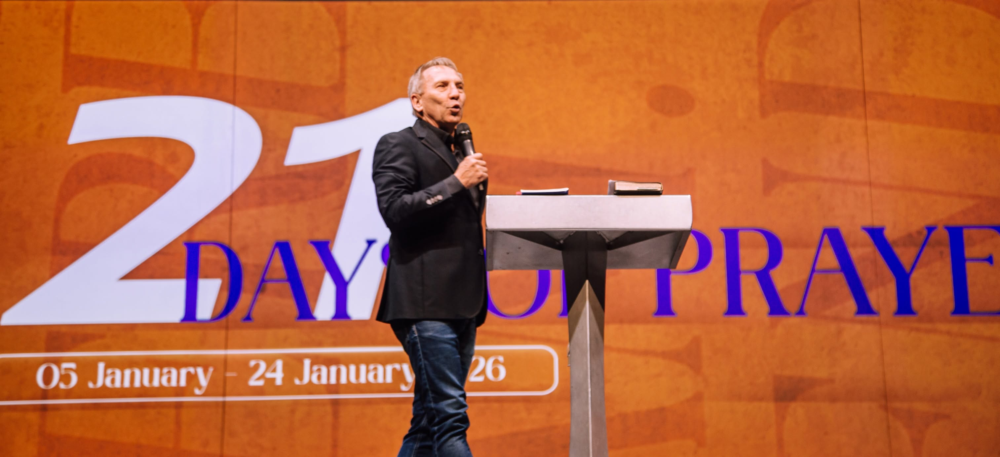
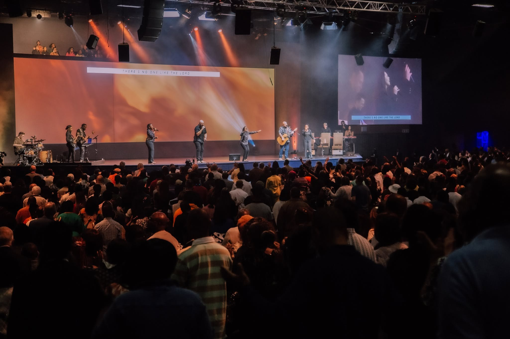
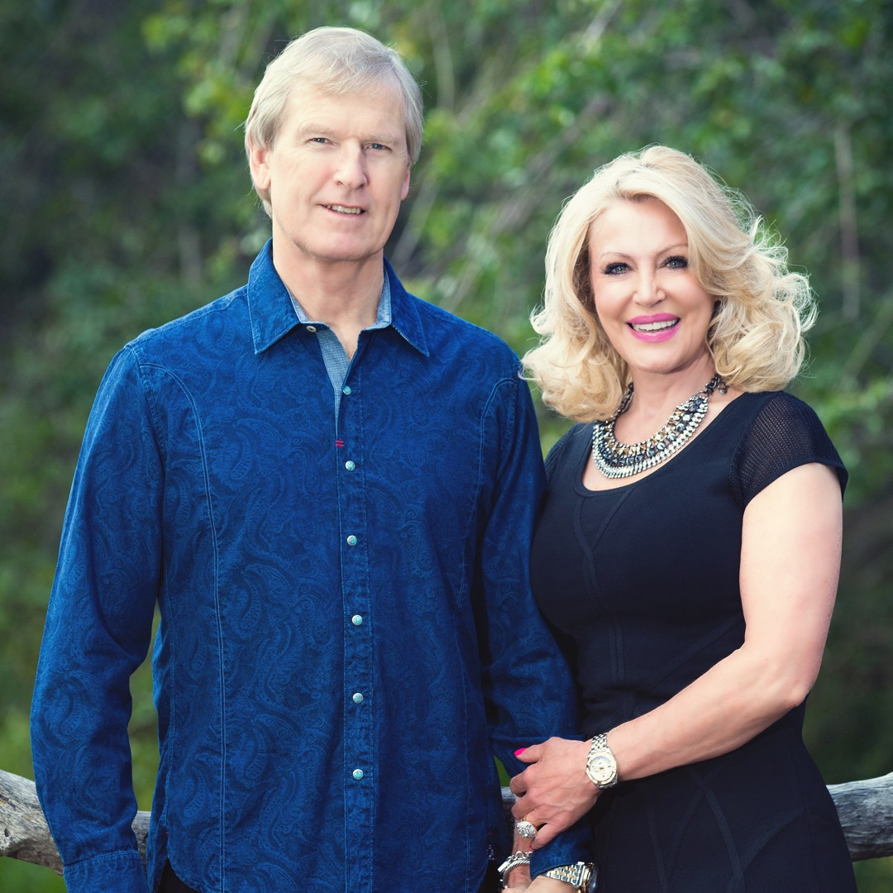

About CFC
Who We Are
Our Purpose
Four simple commitments shape everything we do.
01Know
Know
God
02Find
Find
Freedom
03Discover
Discover
Purpose
04Make a
Make a
Difference

Our Story
A family that started small
What began as a handful of people with a big vision has become a multi-campus family across Johannesburg - still driven by the same heart to reach people and build lives.

Where We’re Going
Reaching the whole city
We’re planting campuses across Johannesburg so that everyone, everywhere, has a church home within reach - a place to belong, grow, and serve.

Founding & Senior Pastors
Apostle Theo & Dr Beverley Wolmarans
Apostle Theo and Dr Beverley Wolmarans founded Christian Family Church with a heart to reach people and build lives. Decades on, they still lead the family with the same passion to see people know God, find freedom and discover their purpose.
Our Team
Leadership Team
{{ p.initials }}
{{ p.name }}
{{ p.role }}
What We Believe
Statement of Faith
{{ f.a }}